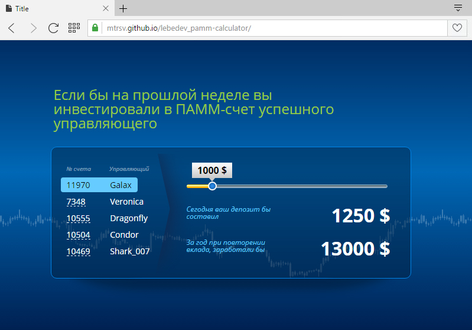

Список студентов
Список студентов
Динамическая страница отображения списка студентов. Добавление и удаление студентов,
редактирование информации. Графики, визуализирующие данные о студентах.
Умножение матриц
Калькулятор умеет умножать матрицы,
добавлять и удалять строки и столбцы.
Для более плотной компоновки матриц на экране,
есть возможность менять их местами.

Памм-инвестиции
Калькулятор считает доход от инвестиций в ПАММ-счет
в зависимости от управляющего и начального вклада.
 Калькулятор депозита
Калькулятор депозита
Калькулятор считает доход от депозита
в зависимости от начальной суммы
и срока вклада.